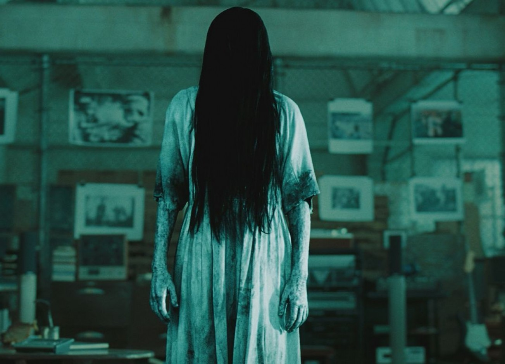
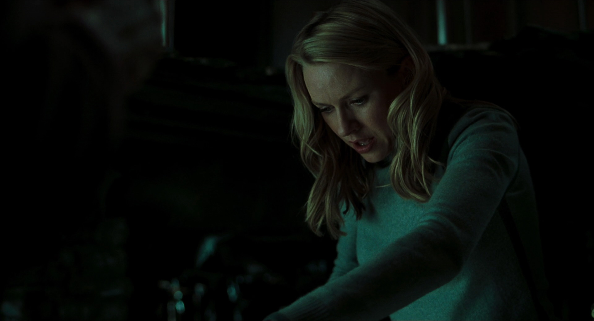
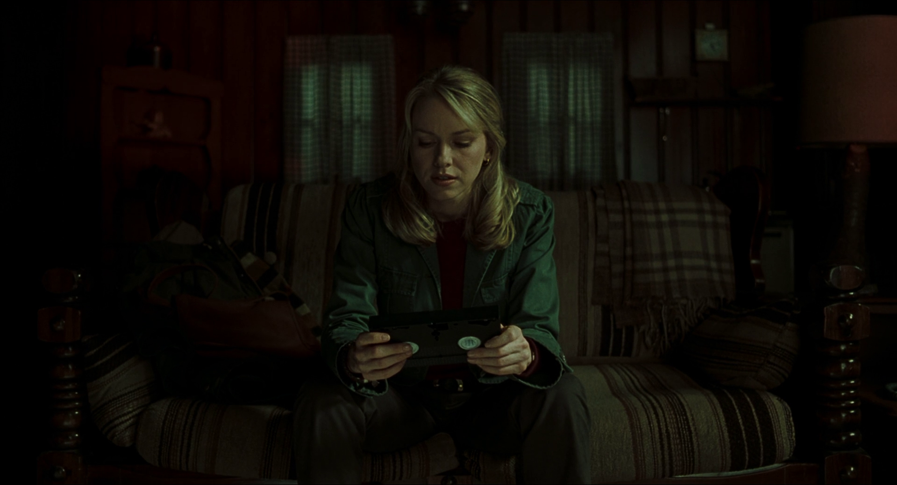

Cela commence comme beaucoup d'autres légendes urbaines. Une mystérieuse cassette vidéo serait porteuse d'une étrange malédiction : quiconque la visionne est condamné à mourir sept jours plus tard par un coup de téléphone. Mais lorsque quatre adolescents meurent de façon inexpliquée une semaine, jour pour jour, après avoir regardé la vidéo, la tante de l'une des victimes, la journaliste Rachel Keller (Naomi Watts) part à la recherche de la cassette vidéo maudite. Après l'avoir trouvée, la journaliste la visionne.
La légende devient alors réalité pour Rachel. Le temps lui est compté : elle n'a plus que sept jours pour déjouer le sortilège de la malédiction.


Le film a été tourné sur la côte Ouest des États-Unis (Californie, Oregon et État de Washington), ainsi qu'à Boston.
Le phare de « Moesko Island » est en fait celui du cap Yaquina situé à Newport dans l'Oregon.
